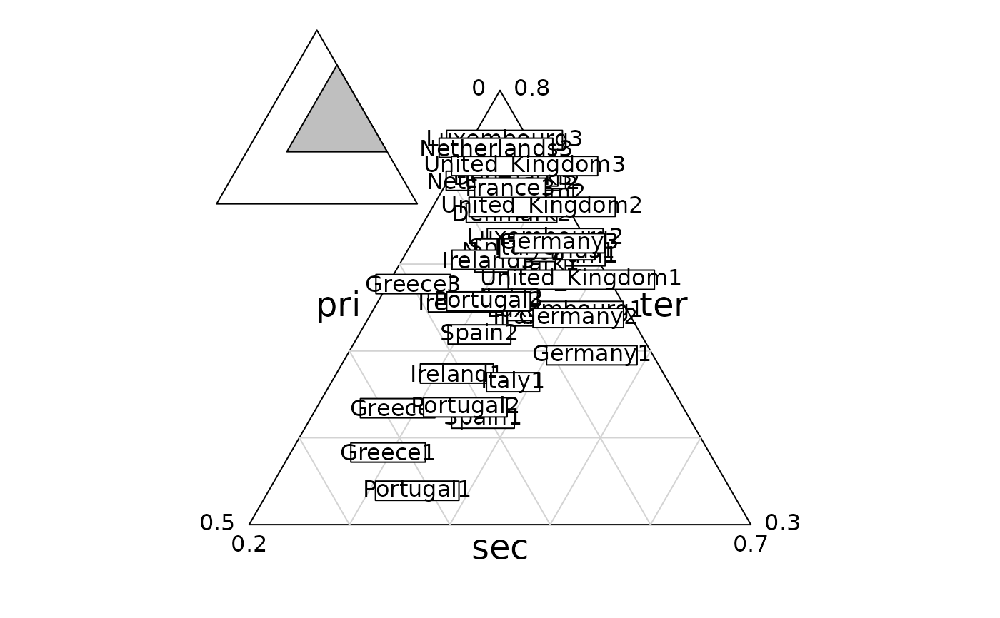
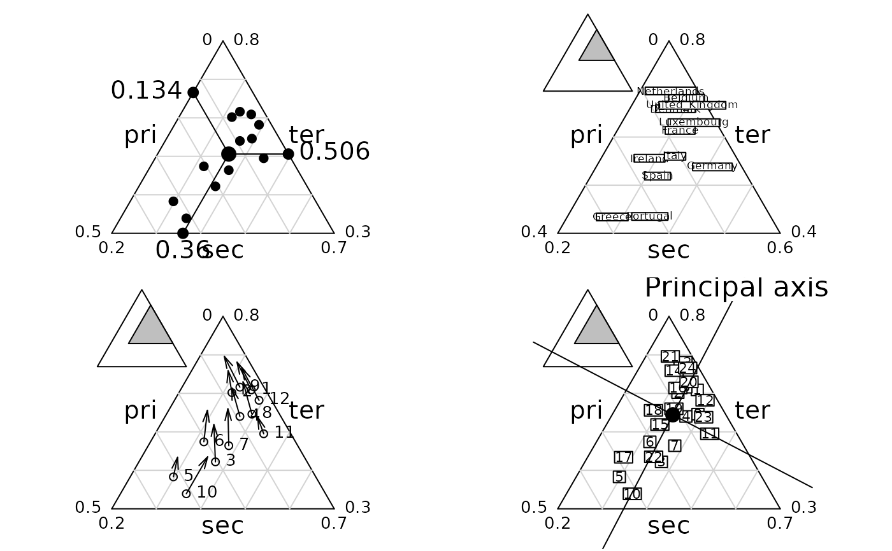
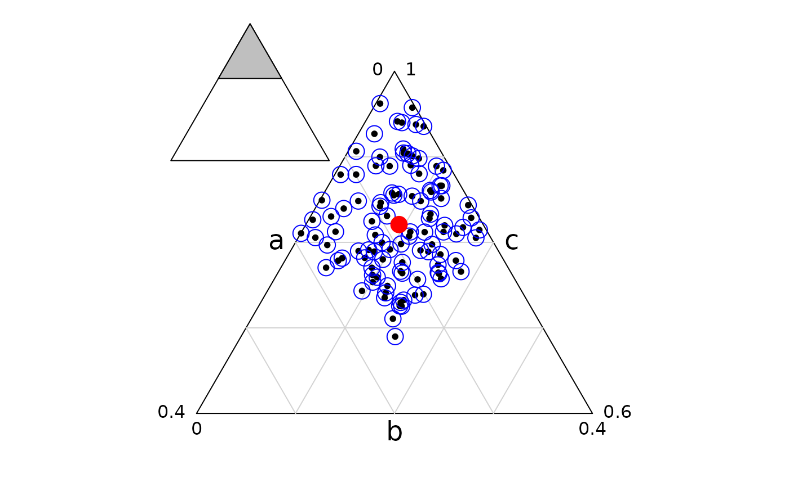
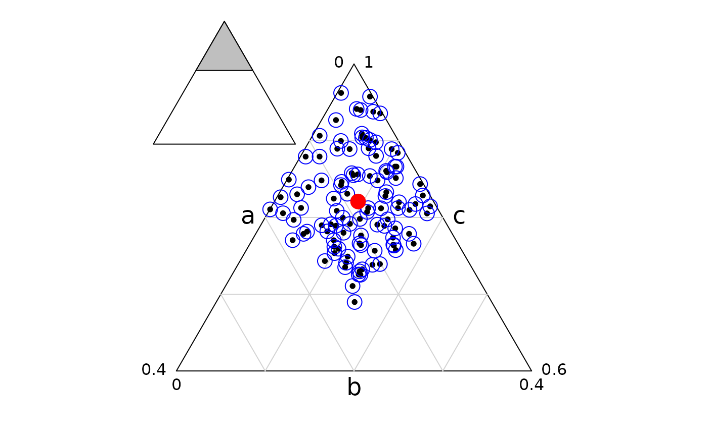

Triangular Plotting
triangle.plot.RdGraphs for a dataframe with 3 columns of positive or null valuestriangle.plot is a scatterplottriangle.biplot is a paired scatterplotstriangle.posipoint, triangle.param, add.position.triangle are utilitaries functions.
Usage
triangle.plot(ta, label = as.character(1:nrow(ta)), clabel = 0,
cpoint = 1, draw.line = TRUE, addaxes = FALSE, addmean = FALSE,
labeltriangle = TRUE, sub = "", csub = 0, possub = "topright",
show.position = TRUE, scale = TRUE, min3 = NULL, max3 = NULL,
box = FALSE)
triangle.biplot (ta1, ta2, label = as.character(1:nrow(ta1)),
draw.line = TRUE, show.position = TRUE, scale = TRUE)Arguments
- ta, ta1, ta2,
data frame with three columns, will be transformed in percentages by rows
- label
a vector of strings of characters for the point labels
- clabel
if not NULL, a character size for the labels, used with
par("cex")*clabel- cpoint
a character size for plotting the points, used with
par("cex")*cpoint. If zero, no points are drawn- draw.line
a logical value indicating whether the lines into the triangle should be drawn
- addaxes
a logical value indicating whether the principal axes should be drawn
- addmean
a logical value indicating whether the mean should be plotted
- labeltriangle
a logical value indicating whether the variable names should be wrote
- sub
a string of characters to be inserted as legend
- csub
a character size for the legend, used with
par("cex")*csub- possub
a string of characters indicating the sub-title position ("topleft", "topright", "bottomleft", "bottomright")
- show.position
a logical value indicating whether the used triangle should be shown in the complete one
- scale
a logical value indicating whether the smaller equilateral triangle containing the plot should be used
- min3
If scale is FALSE, a vector of three values for the minima e.g. c(0.1,0.1,0.1) can be used
- max3
If scale is FALSE a vector of three values for the maxima e.g. c(0.9,0.9,0.9) can be used
- box
a logical value indicating whether a box around the current plot should be drawn
Value
triangle.plot returns an invisible matrix containing the coordinates used for the plot. The graph can be supplemented in various ways.
Examples
data(euro123)
tot <- rbind.data.frame(euro123$in78, euro123$in86, euro123$in97)
row.names(tot) <- paste(row.names(euro123$in78), rep(c(1, 2, 3), rep(12, 3)), sep = "")
triangle.plot(tot, label = row.names(tot), clab = 1)

par(mfrow = c(2, 2))
triangle.plot(euro123$in78, clab = 0, cpoi = 2, addmean = TRUE, show = FALSE)
triangle.plot(euro123$in86, label = row.names(euro123$in78), clab = 0.8)
triangle.biplot(euro123$in78, euro123$in86)
triangle.plot(rbind.data.frame(euro123$in78, euro123$in86), clab = 1,
addaxes = TRUE, sub = "Principal axis", csub = 2, possub = "topright")

triangle.plot(euro123[[1]], min3 = c(0, 0.2, 0.3), max3 = c(0.5, 0.7, 0.8),
clab = 1, label = row.names(euro123[[1]]), addax = TRUE)
triangle.plot(euro123[[2]], min3 = c(0, 0.2, 0.3), max3 = c(0.5, 0.7, 0.8),
clab = 1, label = row.names(euro123[[1]]), addax = TRUE)
triangle.plot(euro123[[3]], min3 = c(0, 0.2, 0.3), max3 = c(0.5, 0.7, 0.8),
clab = 1, label = row.names(euro123[[1]]), addax = TRUE)
triangle.plot(rbind.data.frame(euro123[[1]], euro123[[2]], euro123[[3]]))
 par(mfrow = c(1, 1))
wtriangleplot <- cbind.data.frame(a = runif(100), b = runif(100), c = runif(100, 4, 5))
wtriangleplot <- triangle.plot(wtriangleplot)
points(wtriangleplot, col = "blue", cex = 2)
wtriangleplot <- colMeans(wtriangleplot)
points(wtriangleplot[1], wtriangleplot[2], pch = 20, cex = 3, col = "red")

rm(wtriangleplot)
par(mfrow = c(1, 1))
wtriangleplot <- cbind.data.frame(a = runif(100), b = runif(100), c = runif(100, 4, 5))
wtriangleplot <- triangle.plot(wtriangleplot)
points(wtriangleplot, col = "blue", cex = 2)
wtriangleplot <- colMeans(wtriangleplot)
points(wtriangleplot[1], wtriangleplot[2], pch = 20, cex = 3, col = "red")

rm(wtriangleplot)